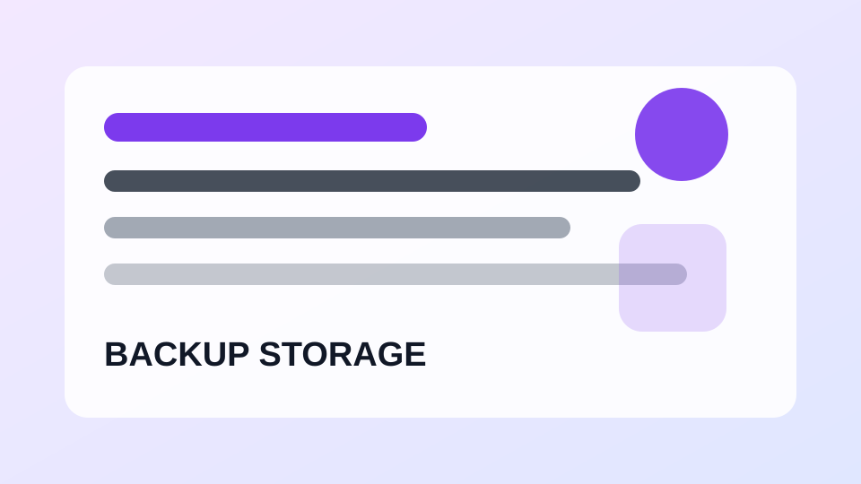

백업/저장공간사진을 삭제하기 전에 백업 확인하는 방법
클라우드 백업 상태를 확인해 소중한 사진을 잃지 않도록 합니다.
스마트폰, 앱 설정, 계정 보안, 백업과 생활 체크리스트를 쉽게 정리하는 디지털 생활 가이드
사진, 파일, 기기 변경 전 백업 기준을 정리합니다.

백업/저장공간클라우드 백업 상태를 확인해 소중한 사진을 잃지 않도록 합니다.
큰 파일, 공유 파일, 휴지통을 확인해 저장공간을 확보합니다.
사진, 연락처, 기기 백업 설정을 점검합니다.
문서와 사진을 나중에 찾기 쉽게 정리하는 방법입니다.
연락처, 사진, 인증 앱, 메신저 백업을 빠뜨리지 않도록 정리합니다.
자료 손상을 줄이기 위한 보관과 분리 습관입니다.
용량, 가격, 기기 연동, 공유 기능을 비교합니다.
문서, 설치파일, 이미지가 섞인 폴더를 정돈합니다.